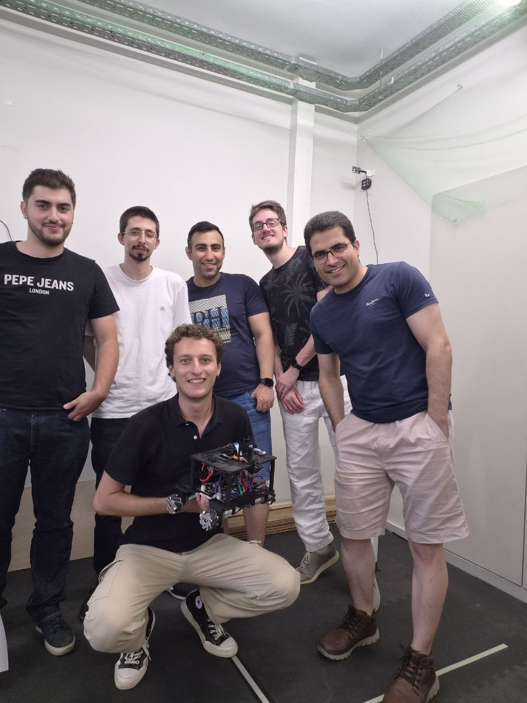

Master's thesis · 2026
01
Robotics / Motion control
OMNICAR — Omnidirectional robotic platform
Redesign, implementation and experimental validation of a complete omnidirectional robot, from the mechanical structure and electrical system to embedded firmware, ROS2 and high-level controllers.
My contribution
I redesigned the CAD structure, integrated the electronics, developed modular ESP32 firmware and a PI wheel-speed controller, migrated the architecture to ROS2 Jazzy and compared three motion-control strategies through reproducible experiments.
0.0469 → 0.0330 m
lateral RMSE, LIN-05 vs MPC-06
50 / 100 / 200 Hz
encoder estimation rates validated
3
high-level controllers compared